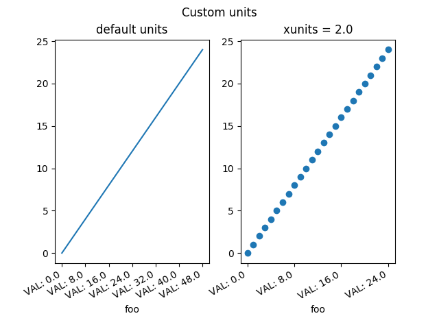

Version 3.0.3
Note
Click here to download the full example code
A mockup "Foo" units class which supports conversion and different tick formatting depending on the "unit". Here the "unit" is just a scalar conversion factor, but this example shows that Matplotlib is entirely agnostic to what kind of units client packages use.
from matplotlib.cbook import iterable
import matplotlib.units as units
import matplotlib.ticker as ticker
import matplotlib.pyplot as plt
class Foo(object):
def __init__(self, val, unit=1.0):
self.unit = unit
self._val = val * unit
def value(self, unit):
if unit is None:
unit = self.unit
return self._val / unit
class FooConverter(object):
@staticmethod
def axisinfo(unit, axis):
'return the Foo AxisInfo'
if unit == 1.0 or unit == 2.0:
return units.AxisInfo(
majloc=ticker.IndexLocator(8, 0),
majfmt=ticker.FormatStrFormatter("VAL: %s"),
label='foo',
)
else:
return None
@staticmethod
def convert(obj, unit, axis):
"""
convert obj using unit. If obj is a sequence, return the
converted sequence
"""
if units.ConversionInterface.is_numlike(obj):
return obj
if iterable(obj):
return [o.value(unit) for o in obj]
else:
return obj.value(unit)
@staticmethod
def default_units(x, axis):
'return the default unit for x or None'
if iterable(x):
for thisx in x:
return thisx.unit
else:
return x.unit
units.registry[Foo] = FooConverter()
# create some Foos
x = []
for val in range(0, 50, 2):
x.append(Foo(val, 1.0))
# and some arbitrary y data
y = [i for i in range(len(x))]
fig, (ax1, ax2) = plt.subplots(1, 2)
fig.suptitle("Custom units")
fig.subplots_adjust(bottom=0.2)
# plot specifying units
ax2.plot(x, y, 'o', xunits=2.0)
ax2.set_title("xunits = 2.0")
plt.setp(ax2.get_xticklabels(), rotation=30, ha='right')
# plot without specifying units; will use the None branch for axisinfo
ax1.plot(x, y) # uses default units
ax1.set_title('default units')
plt.setp(ax1.get_xticklabels(), rotation=30, ha='right')
plt.show()
Keywords: matplotlib code example, codex, python plot, pyplot Gallery generated by Sphinx-Gallery